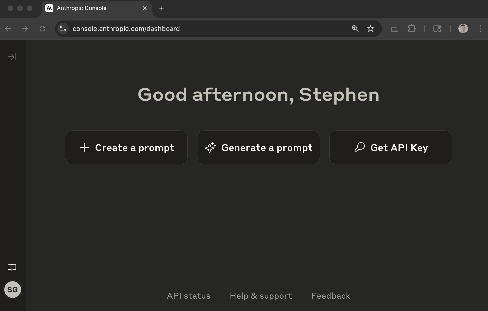
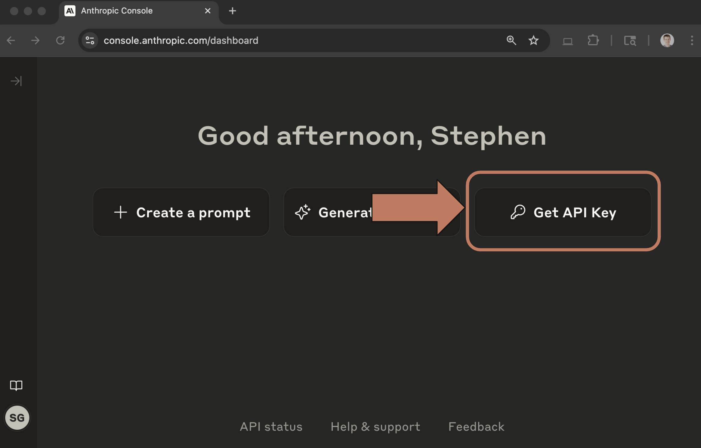
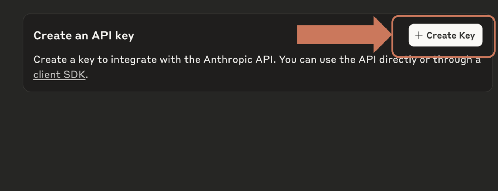
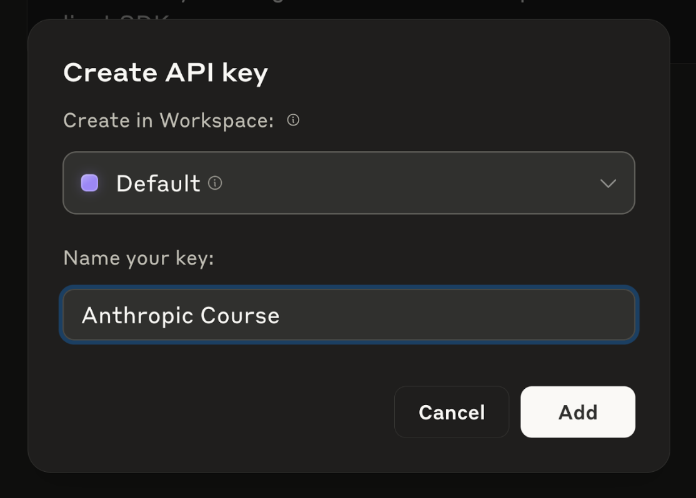

Ключ API
Чему научитесь
Пять шагов в консоли
К концу урока вы сможете:
- открыть консоль и дойти до списка ключей;
- создать ключ в workspace Default с понятным именем;
- скопировать ключ, пока окно ещё открыто.
Зачем он сейчас
В следующем видео будет запрос к API. Для него нужен секретный ключ. Эта страница — только как его создать.
Шаг 1. Откройте консоль
В браузере откройте console.anthropic.com и войдите в аккаунт Anthropic. Страница выглядит так:

Шаг 2. Нажмите Get API Keys
Кнопка справа вверху на главной панели.

Шаг 3. Нажмите Create Key
На странице ключей кнопка Create Key тоже справа вверху.

Шаг 4. Workspace и имя
Создайте ключ в workspace Default. Имя нужно, чтобы потом отличить ключи друг от друга. В уроке имя — Anthropic Course.

Шаг 5. Скопируйте ключ
Ключ показывается во всплывающем окне один раз. Скопируйте его: он понадобится в следующем видео. Если окно закрыли, удалите этот ключ и создайте снова.
Дальше
Скопированный ключ подставляют в окружение и делают первый вызов.
Оригинал урока: Getting an API key.